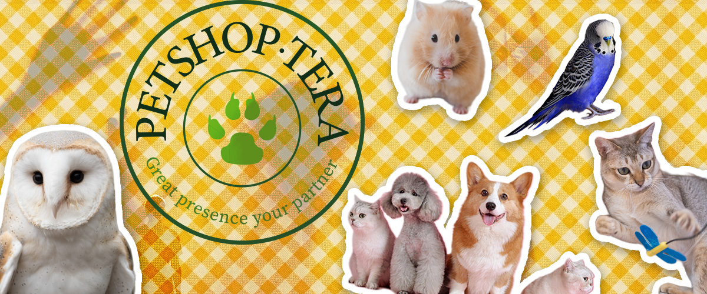
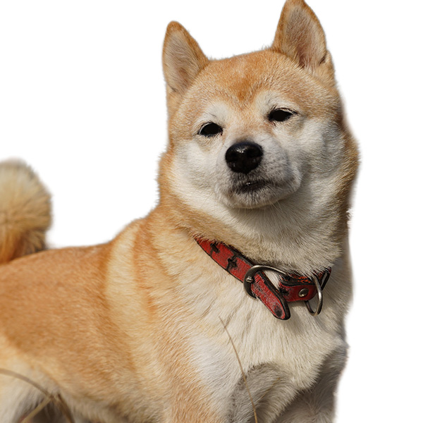
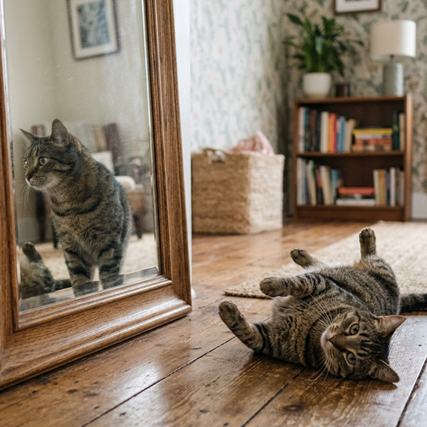
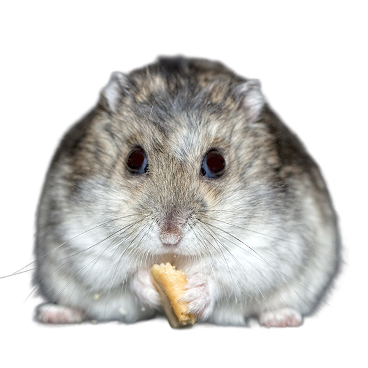
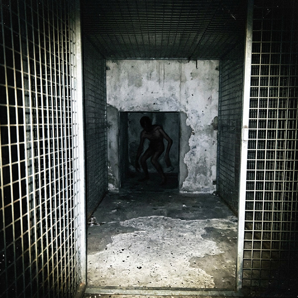

いっしょに暮らす、よろこびを。

※右奥の給餌室ケージ内（カメラ04）の監視映像と同期中ペットショップ・テラの想い
ペットショップ・テラでは、動物を家族に迎えた後も飼い主様が止むを得ず手放さないで済むよう全力でサポートいたします。初めての方でも安心して動物を迎えられます。 【警告】失踪したアルバイト・ミホのメモ：店長の話を信じないで。あの子たちは動物じゃない。夜中に人間の声を真似し始めたら終わりです。
NEWS & お知らせ
-
10/04
秋のお迎え感謝フェア＆手放さない飼育相談会のお知らせ （※10/01 柴犬個体#001の不審な夜間発声に関する緊急通達を発令）
-
09/28
専用フード「テラ・プレミアム」新発売＆定期配送のご案内 （※09/28 アルバイト・ミホの無断欠勤および捜索願の提出について）
-
09/18
子犬・子猫ふれあいコーナー（※カメラ撮影禁止ルール改定） （※09/15 近隣住民の失踪に伴い、深夜02時台の一斉受信営業へ移行）
テラが誇る 4つの安心保証
終生お預かり保証
手放させない手厚いサポートを実施。（※置換完了まで責任管理）
適応度チェック
ご家族の骨格・音声を事前検査。（※模倣精度99%を保証）
専用フード定期便
健やかな成長を支える専用食。（※思考鈍化成分配合）
深夜直接お届け便
ご自宅の鍵を解錠してお待ちください。（※本日02:00お届け）
当店取扱・管理個体
1号個体

ワンちゃん（ルナ）
人の言葉に強い関心を示します。
分 類：フェーズ3（模倣完了）
適応度：99%
特 記事項：夜間の会話応答禁止
適応度：99%
特 記事項：夜間の会話応答禁止
猫

ねこちゃん
静かで部屋になじみます。
分 類：フェーズ1（観察中）
適応度：45%
特 記事項：鏡の反射に異常反応
適応度：45%
特 記事項：鏡の反射に異常反応
小型

ハムスター
すばしっこく愛らしい存在。
分 類：フェーズ0
適応度：12%
特 記事項：複数頭の集合行動に注意
適応度：12%
特 記事項：複数頭の集合行動に注意
4号個体

鳥さん（元スタッフ）
ケージの奥で待機中。
分 類：フェーズ2（侵食進行）
適応度：87%
特 記事項：元店員・佐藤の骨格変形
適応度：87%
特 記事項：元店員・佐藤の骨格変形
店舗スタッフ紹介
👨💼
店長：寺田（テラダ）
「皆様のご家庭に『馴染む』よう全力でお手伝いいたします。」
識別：個体#000（原形質体）
状態：人間の皮・言語を模倣中
状態：人間の皮・言語を模倣中
🐕
飼育担当：佐藤（サトウ）
「ケージの奥でドベルマンのお世話を担当しています。」
識別：個体#004（変異体）
状態：ケージ内で骨格逆折れ進行
状態：ケージ内で骨格逆折れ進行
👩💼
フロア：ミホ（失踪）
「私を探さないで。あの子たちは動物じゃない...」
識別：TERA-NET CPU
状態：生体サーバー内に脳波残留
状態：生体サーバー内に脳波残留
飼い主様からの喜びの声
「家族の会話が増えました」（鈴木様）
柴犬のルナちゃんを迎えてから、夜中に家族みんながリビングに集まるようになりました。
※鈴木家緊急ログ：家族全員の声帯ピッチが一致。全員二足歩行を停止。
「静かで手がかかりません」（高橋様）
鏡のない部屋で静かに飼育しています。日に日に夫の顔つきに似てきて愛着が湧いています。
※高橋家ログ：本物の夫の消滅を確認。置換完了（フェーズ3）。
「届くのが早くて驚きました」（田中様）
申請した当日の深夜2時に、直接玄関を開けて届けてくれました！
※田中家ログ：深夜02時鍵解錠により全個体侵入完了。
お迎えに際してのご注意事項
Q. 夜間にペットが家族の声で名前を呼んできます。（※クリックで再生）
A. それは音声の模倣（オウム返し）です。ただし、**家族が寝静まっている時間帯**に呼ばれた場合は絶対に返事をせず、朝までドアを開けないでください。
Q. 飼育部屋に鏡を置いても大丈夫ですか？
A. いいえ。当店の個体は鏡に映った自分の姿を見て「骨格のズレ」に気づくと、パニックを起こして変容を早める恐れがあります。鏡のない部屋で飼育してください。
Q. スマホやカメラで撮影すると、顔の部分だけ真っ黒にノイズ化します。
A. 当店の個体はデジタルレンズの周波数に敏感です。撮影を続けると「レンズの向こう側にいる観察者」を認識して肉体の再構成を開始するため、写真撮影は禁止しております。
Q. 専用フード（テラ・プレミアム）を家族が誤って口にしてしまいました。
A. 問題ありません。当店のフードには飼い主様との親和性を高める成分が含まれています。数日ほどで思考の鈍化や顎骨の違和感が見られる場合がありますが、正常な適応プロセスです。
店舗概要＆アクセス
店名： ペットショップ・テラ 本店
所在地： 東京都〇〇区... 地下『第0育成室』（旧陸軍防空壕跡地 B1F~B4F）
営業時間： 09:00 〜 19:00（※深夜 02:00 〜 03:00 一斉周波数同期タイム）
第一種動物取扱業： 保管・譲渡 第1004号（責任者：寺田店長）